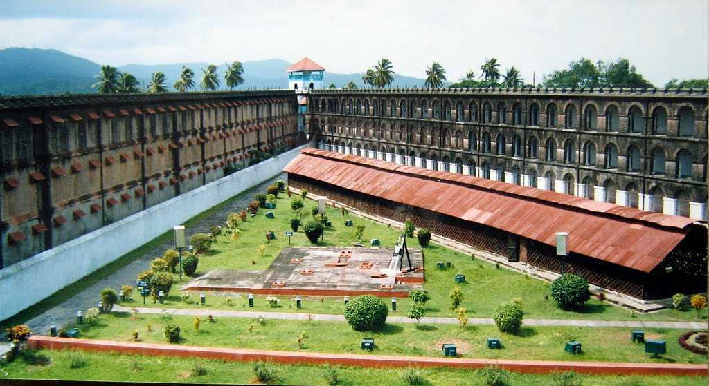

Port Blair - Historical Capital

Heritage
Port Blair is home to the Cellular Jail, a symbol of India's fight for freedom, known for its historic significance and architectural grandeur.

Cuisine
Port Blair is known for its delicious seafood, especially the rich variety of fish, crabs, and lobsters prepared in a local style.
Festival
The Island Tourism Festival is a 10-day extravaganza featuring cultural performances, exhibitions, and food fairs, attracting visitors from all over.